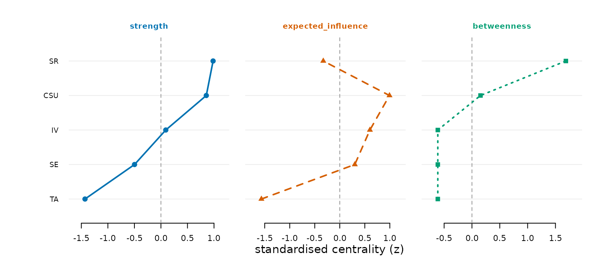
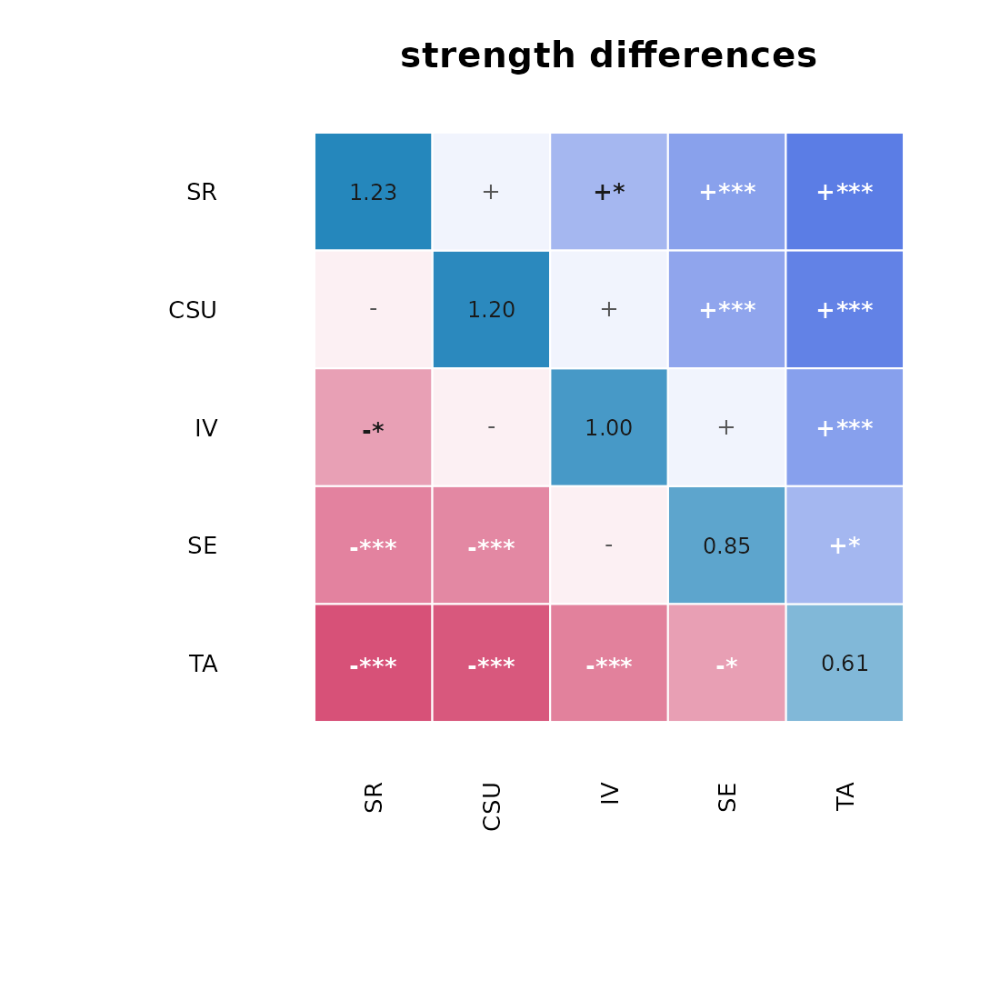

Visualizing centrality, bootstrap and comparison results
Written by Mohammed Saqr and Sonsoles López-Pernas
Source:vignettes/articles/visualizing-networks.Rmd
visualizing-networks.RmdThe results of a network analysis are rarely limited to the network itself. A report also ranks the nodes by centrality, shows how precisely each edge is estimated, states which edges or nodes differ from one another, documents whether the centrality order survives the loss of part of the sample, and, when two groups are studied, tests whether their networks differ. Each of these results is a distribution or a set of intervals, and each is read most directly from a figure. A figure helps only if the reader knows what is plotted against what, which marks denote significance, and what pattern would support or undermine the conclusion.
This article draws the figure for each of these results from one
network of five self-regulated learning constructs, and states for each
what it shows and how to read it: centrality profiles, bootstrap
intervals for edges and centralities, difference matrices and forest
plots, case-dropping stability curves, and the permutation distributions
of a network comparison test. All figures are drawn by the
plot() method of the corresponding result.
Data
SRL_GPT holds 300 sets of responses to the Motivated
Strategies for Learning Questionnaire, each a construct score on a scale
from 1 to 7. The responses were generated by a large language model
(GPT) in a study of how such models answer psychological surveys (Saqr,
2025). A second set, SRL_Claude, with 300 responses
generated by another model, is the comparison group in the last
section.
-
Nodes:
CSU(cognitive strategy use),IV(intrinsic value),SE(self-efficacy),SR(self-regulation) andTA(test anxiety). - Observations: one row per respondent; the data are complete.
head(SRL_GPT)
#> CSU IV SE SR TA
#> 1 5.307692 5.666667 5.777778 5.333333 4.00
#> 2 5.846154 6.444444 6.000000 5.777778 4.00
#> 3 6.615385 6.666667 6.222222 6.333333 3.25
#> 4 5.692308 6.555556 6.333333 5.555556 4.50
#> 5 4.384615 5.555556 4.888889 4.777778 4.00
#> 6 4.846154 5.444444 5.666667 5.111111 3.50ebic_glasso() estimates the network whose results are
drawn below: a Gaussian graphical model whose edges are partial
correlations selected by the extended Bayesian information
criterion.
fit <- ebic_glasso(SRL_GPT)
fit
#> <psychnet> glasso network
#> nodes: 5 edges: 10 (undirected)
#> lambda: 0.00861 gamma: 0.5
#> optimality (KKT residual): 2.21e-10The network has 10 edges; the Gaussian graphical models article interprets them.
Which nodes are most central?
net_centralities() computes centrality measures, one row
per node. Strength is the sum of absolute edge weights, expected
influence the signed sum, and betweenness the proportion of shortest
paths between other nodes that pass through a node.
ct <- net_centralities(fit,
measures = c("strength", "expected_influence",
"betweenness"))
ct
#> node strength expected_influence betweenness
#> 1 CSU 1.1984512 1.19845117 0.1666667
#> 2 IV 1.0012765 1.00127649 0.0000000
#> 3 SE 0.8492185 0.84921854 0.0000000
#> 4 SR 1.2314317 0.53172852 0.5000000
#> 5 TA 0.6082238 -0.09147935 0.0000000Self-regulation has the largest strength (1.231) and betweenness
(0.5), but its negative edge with test anxiety reduces its expected
influence to 0.532, below that of cognitive strategy use (1.198),
intrinsic value (1.001) and self-efficacy (0.849). Only cognitive
strategy use and self-regulation lie on shortest paths between other
nodes. plot() draws one panel per measure, with the nodes
sorted by value so that the most central node is at the top:
plot(ct)
The three panels give three different orders, with self-regulation first on strength and betweenness and fourth on expected influence. Which node is “most central” depends on the measure, and a report names the measure.
Do the nodes keep their position across measures?
With type = "line", the nodes share one vertical order
in all panels, set by their mean standardized centrality, and each panel
keeps its own axis. A node whose line runs straight is equally central
on every measure; a node whose line bends is central on some measures
and peripheral on others.
plot(ct, type = "line")
The scale argument sets the transformation of each
panel: "raw" (the default) keeps the original values,
"z" standardizes each measure to mean 0 and standard
deviation 1, and "relative" rescales it to the range 0 to
1. Standardized values put the three measures on one scale, so the bends
become comparable.
plot(ct, type = "line", scale = "z")
Self-regulation bends most: high on strength and betweenness, low on expected influence. Test anxiety is lowest on strength and expected influence.
How precise are the edges?
net_boot() re-estimates the network on bootstrap samples
of the respondents and records every edge and centrality value; the
percentile interval of each is its measure of precision. An applied
analysis uses at least 1,000 samples; 250 keep this example short.
set.seed(1)
bs <- net_boot(SRL_GPT, method = "glasso", n_boot = 250, cores = 1)
bs
#> <psychnet_bootstrap> glasso, 250 resamples, 95% CI
#> 10 edges (7 significant), 5 nodes, measures: strength, expected_influenceSeven of the ten edges have 95% intervals that exclude zero. The default plot shows each edge as its observed weight with its bootstrap interval, sorted by weight. Edges whose interval excludes zero are drawn as filled points with solid intervals, the others as open points with dashed intervals.
plot(bs)
The three edges whose intervals include zero are the small positive edges of test anxiety with intrinsic value, self-efficacy and cognitive strategy use. The negative self-regulation–test anxiety edge and the six edges among the learning constructs are estimated with intervals that stay clear of zero.
How precise is each node’s centrality?
With type = "centrality", the plot shows the bootstrap
interval of each node’s centrality, one panel per measure.
plot(bs, type = "centrality")
as.data.frame(bs, what = "centrality")
#> node strength strength_lower strength_upper expected_influence
#> 1 CSU 1.1984512 1.0817999 1.3489871 1.19845117
#> 2 IV 1.0012765 0.8670417 1.1413809 1.00127649
#> 3 SE 0.8492185 0.7196350 1.0077951 0.84921854
#> 4 SR 1.2314317 1.0840409 1.3565767 0.53172852
#> 5 TA 0.6082238 0.3734560 0.7761419 -0.09147935
#> expected_influence_lower expected_influence_upper
#> 1 1.0726933 1.34898708
#> 2 0.8670417 1.14138092
#> 3 0.7196350 1.00779507
#> 4 0.4018903 0.65431683
#> 5 -0.1648691 -0.02151559The strength intervals of cognitive strategy use (1.08 to 1.35) and self-regulation (1.08 to 1.36) almost coincide, so these two nodes cannot be ordered on strength. Test anxiety (0.37 to 0.78) lies below every other node. Wide and overlapping intervals are the visual signal that a ranking is uncertain.
Which edges and nodes differ from one another?
With type = "edge_diff" or
type = "centrality_diff", the plot shows a matrix with the
items on both axes, ordered from the largest to the smallest observed
value. The diagonal holds the observed values. An off-diagonal cell is
filled when the two items differ across the bootstrap samples, red when
the row item is larger and blue when it is smaller, and left faint
otherwise; stars give the p-value of the difference.
plot(bs, type = "edge_diff")
plot(bs, type = "centrality_diff", measure = "strength")
The strength matrix shows which pairs of nodes can be ordered. The
same comparisons are available as a table from
difference_test(), with the observed difference, its
interval, a p-value and a significant flag:
dt <- difference_test(bs, type = "strength")
dt
#> item1 item2 value1 value2 obs_diff lower upper p_value
#> 1 CSU IV 1.1984512 1.0012765 0.19717467 -0.01516075 0.43862886 0.080
#> 2 CSU SE 1.1984512 0.8492185 0.34923263 0.12605796 0.63527516 0.000
#> 3 IV SE 1.0012765 0.8492185 0.15205795 -0.09197932 0.36727209 0.208
#> 4 CSU SR 1.1984512 1.2314317 -0.03298049 -0.21134715 0.18144546 0.712
#> 5 IV SR 1.0012765 1.2314317 -0.23015517 -0.41550510 -0.04600301 0.024
#> 6 SE SR 0.8492185 1.2314317 -0.38221312 -0.54711539 -0.20825524 0.000
#> 7 CSU TA 1.1984512 0.6082238 0.59022738 0.38908973 0.79088205 0.000
#> 8 IV TA 1.0012765 0.6082238 0.39305270 0.19311698 0.60820843 0.000
#> 9 SE TA 0.8492185 0.6082238 0.24099475 0.02772224 0.47534139 0.016
#> 10 SR TA 1.2314317 0.6082238 0.62320787 0.51502542 0.74080956 0.000
#> significant
#> 1 FALSE
#> 2 TRUE
#> 3 FALSE
#> 4 FALSE
#> 5 TRUE
#> 6 TRUE
#> 7 TRUE
#> 8 TRUE
#> 9 TRUE
#> 10 TRUESeven of the ten pairs differ. Test anxiety has lower strength than every other node, self-regulation is stronger than intrinsic value and self-efficacy, and cognitive strategy use is stronger than self-efficacy. Three pairs cannot be ordered: cognitive strategy use and self-regulation (difference -0.033, p = 0.712), cognitive strategy use and intrinsic value (p = 0.080), and intrinsic value and self-efficacy (p = 0.208). A report can place test anxiety last but should not name a single most central node.
plot() on the table draws the same matrix by default
(style = "box"), which shows which pairs
differ.
plot(dt)
With style = "forest", each pair is a row with its
observed difference and interval and a dashed line at zero, and pairs
whose interval excludes zero are emphasized. This view shows how
large each difference is and how uncertain.
plot(dt, style = "forest")
Is the centrality order stable when cases are dropped?
net_stability() re-estimates the network on subsets that
drop an increasing proportion of the respondents and correlates the
subset centralities with those of the full sample. The CS-coefficient is
the largest proportion that can be dropped while the correlation stays
at or above 0.7 in at least 95% of the subsets.
st <- net_stability(SRL_GPT, method = "glasso",
drop_prop = seq(0.1, 0.8, 0.1), iter = 25)
st
#> <psychnet_stability> glasso, 25 subsets/proportion
#> CS-coefficient (pearson cor > 0.70 in > 95% of subsets):
#> strength 0.80
#> expected_influence 0.80The CS-coefficient is 0.80 for both strength and expected influence, well above the value of 0.5 recommended for interpreting centrality (Epskamp et al., 2018). The plot shows the drop proportion on the horizontal axis and the mean correlation with the full sample on the vertical axis, one line per measure with a band of one standard deviation, and the threshold as a dashed line. A curve that stays above the line as more cases are dropped indicates a stable order.
plot(st)
Do the networks of two groups differ?
net_compare() performs the network comparison test (van
Borkulo et al., 2023). It reassigns the respondents of the two groups at
random many times, estimates both networks on each permutation, and
compares the observed differences with their distribution under random
assignment. Two global statistics are tested: M, network structure, the
largest absolute difference of any edge; and S, global strength, the
difference in the sum of absolute edge weights. Each edge is also tested
separately.
cmp <- net_compare(SRL_GPT, SRL_Claude, iter = 250)
summary(cmp)
#> test statistic observed p_value significant
#> 1 network structure M 0.562165 0.003984064 TRUE
#> 2 global strength S 1.092696 0.003984064 TRUEBoth tests reject the hypothesis of equal networks (p = 0.004, the smallest value possible with 250 permutations). The largest edge difference is 0.562, and the global strength is 1.093 higher in the network of the Claude responses (3.537 against 2.444). The default plot shows the permutation distribution of S, with the observed value marked and the p-value in the title; an observed value in the tail of the distribution is evidence of a difference.
plot(cmp)
The observed difference in global strength, 1.09, lies beyond every value in the permutation distribution, which ends near 0.6.
With type = "structure", the plot shows the same for
M.
plot(cmp, type = "structure")
With type = "edges", the plot shows the observed
absolute difference of each edge as a bar, coloured by whether the edge
differs at alpha, and the title gives the number of
differing edges.
plot(cmp, type = "edges")
The per-edge results behind the bars, with the weight in each network, the difference and its permutation p-value:
as.data.frame(cmp)
#> from to weight_1 weight_2 difference p_value p_raw
#> 1 CSU IV 0.41166866 0.001744267 0.40992440 0.003984064 0.003984064
#> 2 CSU SE 0.38290223 0.223973564 0.15892867 0.007968127 0.007968127
#> 3 IV SE 0.15992605 -0.402239002 0.56216505 0.003984064 0.003984064
#> 4 CSU SR 0.35481359 0.728177591 0.37336401 0.003984064 0.003984064
#> 5 IV SR 0.31909443 0.574170376 0.25507595 0.003984064 0.003984064
#> 6 SE SR 0.20767208 0.221496430 0.01382435 0.884462151 0.884462151
#> 7 CSU TA 0.04906668 0.525584044 0.47651736 0.003984064 0.003984064
#> 8 IV TA 0.11058735 -0.013854928 0.12444228 0.131474104 0.131474104
#> 9 SE TA 0.09871818 -0.417575459 0.51629364 0.003984064 0.003984064
#> 10 SR TA -0.34985157 -0.428181457 0.07832989 0.350597610 0.350597610
#> significant
#> 1 TRUE
#> 2 TRUE
#> 3 TRUE
#> 4 TRUE
#> 5 TRUE
#> 6 FALSE
#> 7 TRUE
#> 8 FALSE
#> 9 TRUE
#> 10 FALSESeven of the ten edges differ. The largest differences are
IV–SE (0.160 against -0.402),
SE–TA (0.099 against -0.418) and
CSU–TA (0.049 against 0.526): the two sets of
responses differ not only in how strongly the constructs are related but
in the sign of several relations.
Summary of the plot methods
| Result (verb) |
plot() options |
Question |
|---|---|---|
net_centralities() |
type = "bar" / "line";
scale = "raw" / "z" /
"relative"
|
Which nodes are central, on which measure? |
net_boot() |
type = "edges" / "centrality" /
"edge_diff" / "centrality_diff" /
"predictability"
|
How precise are edges and centralities, and which differ? |
difference_test() |
style = "box" / "forest"
|
Which pairs differ, and by how much? |
net_stability() |
one figure | Is the centrality order stable when cases are dropped? |
net_compare() |
type = "strength" / "structure" /
"edges"
|
Do two networks differ? |
Each figure has a table behind it, read with the verb’s own output or
with as.data.frame(), and reported values are taken from
the table. The network itself is drawn with plot(fit),
which uses the cograph package and is covered in the
article Visualizing networks with cograph.
References
Epskamp, S., Borsboom, D., & Fried, E. I. (2018). Estimating psychological networks and their accuracy: A tutorial paper. Behavior Research Methods, 50(1), 195-212. doi:10.3758/s13428-017-0862-1
Saqr, M. (2025). Delving into the psychology of machines: Exploring the structure of self-regulated learning via LLM-generated survey responses. Computers in Human Behavior, 173, 108769. doi:10.1016/j.chb.2025.108769
van Borkulo, C. D., van Bork, R., Boschloo, L., Kossakowski, J. J., Tio, P., Schoevers, R. A., Borsboom, D., & Waldorp, L. J. (2023). Comparing network structures on three aspects: A permutation test. Psychological Methods, 28(6), 1273-1285. doi:10.1037/met0000476